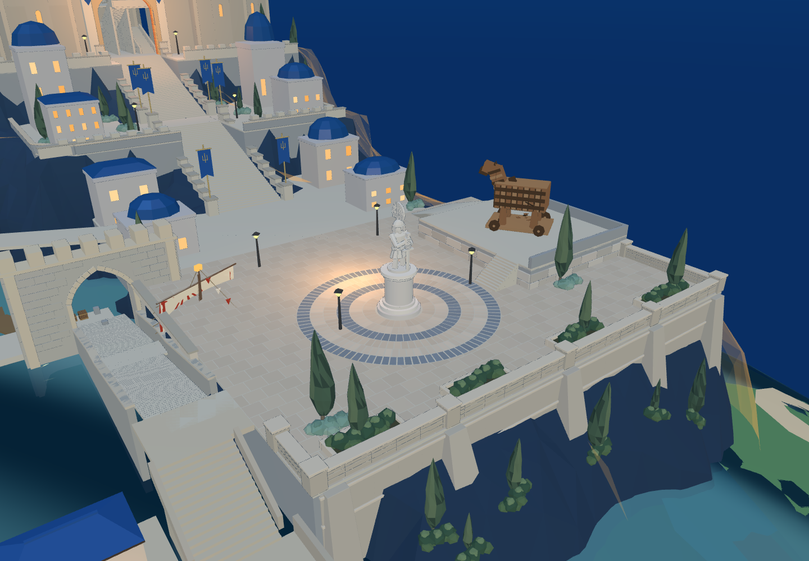
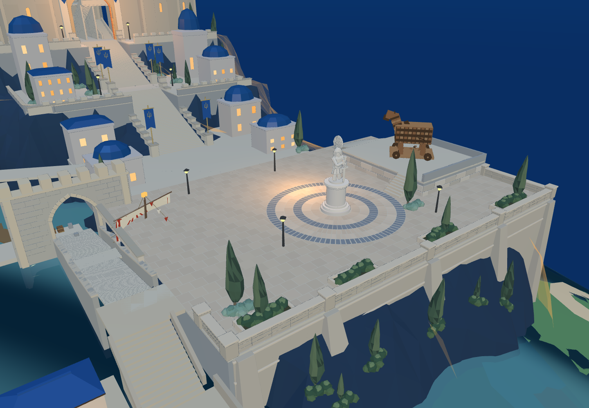
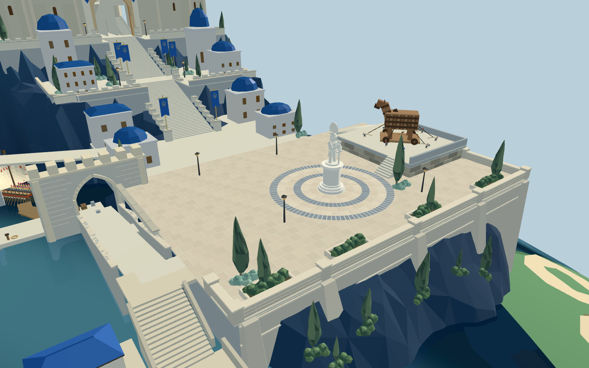
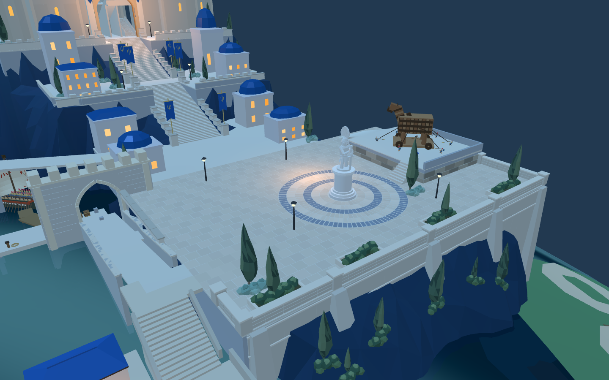
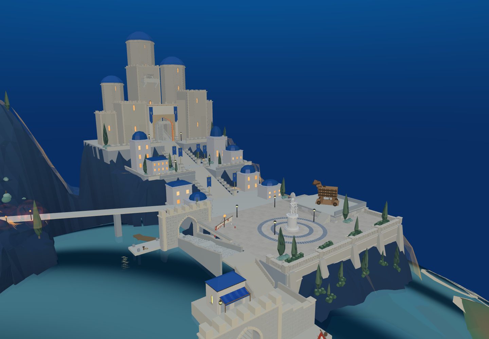
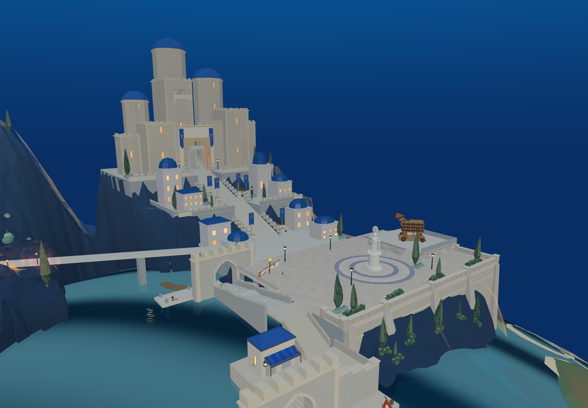

本轮已默认进入 8931 原游戏，并同步同一 Godot 工程。旧城保持本轮开始时的布局。



| 当前模型实测 | 修改前 | 修改后 |
|---|---|---|
| 雕像与主城阶梯轴横向间距 | 1米 | 5米，雕像在右侧 |
| 广场实体宽度 | 36.15米 | 42.15米 |
| 环形石砖 | 六圈 | 六圈保留 |
| 木马台西侧阶梯 | 12阶，每阶深0.2米 | 8阶，每阶深0.3米，高0.225米 |
原木马高台与雕像各右移6米，西侧入口保留。护墙、花坛、路灯、铺装、出场路线联动；Blender 重建边墙与临岩台基，新增右侧承托墙，未用漂浮平板代替承托。


Godot 右侧新增“短剑兵 · 木马台到主城阶梯”。使用原短剑兵、真实场景碰撞与实际 Web 导出的路线；15个路径点，往返各14段均通过。此前坡道和短踏面版本的失败记录保留，不算通过。


主堡至广场的纵向距离、目标中的浓密绿植、临水建筑层次、驻军与完整攻城仍未完成。本轮完成横向错位与相应通路，不代表整幅目标图复刻完成。原木马为原作对象及原潜入引用；此处不声称木马整车移动或多人战斗已验收。
Web几何与支撑记录 · 原短剑兵往返结果 · 未通过的坡道版本 · 未通过的短踏面版本